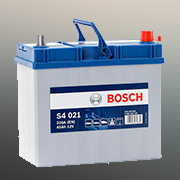

Запчастини для ТО (Mercedes)
Вартість запчастин вказана на сайті компанії. Використовуючи принцип індивідуального підходу до кожного клієнта, менеджер має право запропонувати знижку, керуючись спілкуванням та обсягом замовлення.
Запчастини для ТО
Комплект ГРМ
 Що входить до комплекту ГРМ? Зображення за запитом комплект грм
опис Його обов'язковими компонентами є: ремінь ГРМ; віброгасник;
обвідні ролики; елементи кріплення; кільця свічкових колодязів;
натягувач та ролик натягувача. Можливість встановлення на наших партнерських СТО. Наявність товару та ціну уточнюйте у менеджера за телефоном або залиште запит. Ми із задоволенням відповімо Вам.
Що входить до комплекту ГРМ? Зображення за запитом комплект грм
опис Його обов'язковими компонентами є: ремінь ГРМ; віброгасник;
обвідні ролики; елементи кріплення; кільця свічкових колодязів;
натягувач та ролик натягувача. Можливість встановлення на наших партнерських СТО. Наявність товару та ціну уточнюйте у менеджера за телефоном або залиште запит. Ми із задоволенням відповімо Вам.
Повітряний фільтр
 Повітряний фільтр - елемент очищувача повітря (паперовий,
матер'яний, повстяний, поролоновий, сітчастий або інший),
який служить для очищення від пилу фільтрування.Можливість встановлення на наших партнерських СТО. Наявність товару та ціну уточнюйте у менеджера за телефоном або залиште запит. Ми із задоволенням відповімо Вам.
Повітряний фільтр - елемент очищувача повітря (паперовий,
матер'яний, повстяний, поролоновий, сітчастий або інший),
який служить для очищення від пилу фільтрування.Можливість встановлення на наших партнерських СТО. Наявність товару та ціну уточнюйте у менеджера за телефоном або залиште запит. Ми із задоволенням відповімо Вам.
Фільтр салону
 Салонний фільтр - це спеціальний елемент системи кондиціювання,
опалення та вентиляції, який запобігає попаданню пилу,
пилку, дрібних частинок.Можливість встановлення на наших партнерських СТО. Наявність товару та ціну уточнюйте у менеджера за телефоном або залиште запит. Ми із задоволенням відповімо Вам.
Салонний фільтр - це спеціальний елемент системи кондиціювання,
опалення та вентиляції, який запобігає попаданню пилу,
пилку, дрібних частинок.Можливість встановлення на наших партнерських СТО. Наявність товару та ціну уточнюйте у менеджера за телефоном або залиште запит. Ми із задоволенням відповімо Вам.
Масляний фільтр
 Масляний фільтр - це деталь системи змащення бензинового або дизельного двигуна,
призначена для очищення моторного масла. Можливість встановлення на наших партнерських СТО. Наявність товару та ціну уточнюйте у менеджера за телефоном або залиште запит. Ми із задоволенням відповімо Вам.
Масляний фільтр - це деталь системи змащення бензинового або дизельного двигуна,
призначена для очищення моторного масла. Можливість встановлення на наших партнерських СТО. Наявність товару та ціну уточнюйте у менеджера за телефоном або залиште запит. Ми із задоволенням відповімо Вам.
Корпус ГРМ
.png) Корпус ГРМ Mercedes E-class?, AMG (W124, W210, W211, W212, W213, C207, W238) 1995-2002 р. Артикул: XSNBK3B25X.Можливість встановлення на наших партнерських СТО. Наявність товару, комплектність та ціну уточнюйте у менеджера за телефоном чи залиште нам запит. Ми із задоволенням відповімо Вам.
Корпус ГРМ Mercedes E-class?, AMG (W124, W210, W211, W212, W213, C207, W238) 1995-2002 р. Артикул: XSNBK3B25X.Можливість встановлення на наших партнерських СТО. Наявність товару, комплектність та ціну уточнюйте у менеджера за телефоном чи залиште нам запит. Ми із задоволенням відповімо Вам.
Комплект зчеплення
 Комплект зчеплення застосовується в автомобілі щоб відключити двигун від коробки передач на нетривалий час.
Ця деталь дозволяє водієві плавно рушити з місця і більш комфортно перемикати передачі,
повністю виключаючи ривки. Можливість встановлення на наших партнерських СТО. Наявність товару та ціну уточнюйте у менеджера за телефоном або залиште запит. Ми із задоволенням відповімо Вам.
Комплект зчеплення застосовується в автомобілі щоб відключити двигун від коробки передач на нетривалий час.
Ця деталь дозволяє водієві плавно рушити з місця і більш комфортно перемикати передачі,
повністю виключаючи ривки. Можливість встановлення на наших партнерських СТО. Наявність товару та ціну уточнюйте у менеджера за телефоном або залиште запит. Ми із задоволенням відповімо Вам.
Гальмівна Система
Гальмівні диски
 Гальмовий диск — це частина дискового гальма, яка обертається і до
якої за допомогою привода притискають нерухомі гальмові колодки.
Виступає учасником фрикційної пари тертя, результатом якого є
кероване уповільнення транспортного засобу.Можливість встановлення на наших партнерських СТО. Наявність товару та ціну уточнюйте у менеджера за телефоном або залиште запит. Ми із задоволенням відповімо Вам.
Гальмовий диск — це частина дискового гальма, яка обертається і до
якої за допомогою привода притискають нерухомі гальмові колодки.
Виступає учасником фрикційної пари тертя, результатом якого є
кероване уповільнення транспортного засобу.Можливість встановлення на наших партнерських СТО. Наявність товару та ціну уточнюйте у менеджера за телефоном або залиште запит. Ми із задоволенням відповімо Вам.
Гальмівні колодки
 Гальмівні колодки - це накладки, які під час гальмування з силою притискаються до диска
- за рахунок тертя колодок об диск машина гальмує.До диска під час гальмування їх притискає спеціальний механізм - супорт.Можливість встановлення на наших партнерських СТО. Наявність товару та ціну уточнюйте у менеджера за телефоном або залиште запит. Ми із задоволенням відповімо Вам.
Гальмівні колодки - це накладки, які під час гальмування з силою притискаються до диска
- за рахунок тертя колодок об диск машина гальмує.До диска під час гальмування їх притискає спеціальний механізм - супорт.Можливість встановлення на наших партнерських СТО. Наявність товару та ціну уточнюйте у менеджера за телефоном або залиште запит. Ми із задоволенням відповімо Вам.
Ходова Частина
Стійка стабілізатора
 Стійка стабілізатора служить для кріплення самого стабілізатора поперечної стійкості
з центральним елементом підвіски.
Стабілізатор бореться з кренами кузова при поворотах та відповідає за загальну стійкість автомобіля. Можливість встановлення на наших партнерських СТО. Наявність товару та ціну уточнюйте у менеджера за телефоном або залиште запит. Ми із задоволенням відповімо Вам.
Стійка стабілізатора служить для кріплення самого стабілізатора поперечної стійкості
з центральним елементом підвіски.
Стабілізатор бореться з кренами кузова при поворотах та відповідає за загальну стійкість автомобіля. Можливість встановлення на наших партнерських СТО. Наявність товару та ціну уточнюйте у менеджера за телефоном або залиште запит. Ми із задоволенням відповімо Вам.
Диски R18 2 series
.png) Диски в оригінальному дизайні Mercedes EVO II виробляються сьогодні на замовлення в розмірі 18 дюймів.З ідеальними параметрами для Mercedes W124 E500, E55 AMG, а також SL W129 та інших Мерсів C (W202/W203), E (W210/211).Можливість встановлення на наших партнерських СТО. Наявність товару, комплектність та ціну уточнюйте у менеджера за телефоном чи залиште нам запит. Ми із задоволенням відповімо Вам.
Диски в оригінальному дизайні Mercedes EVO II виробляються сьогодні на замовлення в розмірі 18 дюймів.З ідеальними параметрами для Mercedes W124 E500, E55 AMG, а також SL W129 та інших Мерсів C (W202/W203), E (W210/211).Можливість встановлення на наших партнерських СТО. Наявність товару, комплектність та ціну уточнюйте у менеджера за телефоном чи залиште нам запит. Ми із задоволенням відповімо Вам.
Диски R18 1 series
.png) Гума літня Michelin Pilot Super Sport 265/35 R19 98Y
2014год, протектор 7мм.
Задня вісь:
5х112 11J R20 ET68
Оригінальний номер А 190 401 06 00
Гума літня Michelin Pilot Super Sport 295/30 R20 101Y
Виробник Німеччина
Стан ідеальний.Можливість встановлення на наших партнерських СТО. Наявність товару та ціну уточнюйте у менеджера за телефоном або залиште запит. Ми із задоволенням відповімо Вам.
Гума літня Michelin Pilot Super Sport 265/35 R19 98Y
2014год, протектор 7мм.
Задня вісь:
5х112 11J R20 ET68
Оригінальний номер А 190 401 06 00
Гума літня Michelin Pilot Super Sport 295/30 R20 101Y
Виробник Німеччина
Стан ідеальний.Можливість встановлення на наших партнерських СТО. Наявність товару та ціну уточнюйте у менеджера за телефоном або залиште запит. Ми із задоволенням відповімо Вам.
Важелі підвіски
 Важіль підвіски - це конструкційна деталь ходової частини, яка об'єднує колесо з кузовом.
Ключове завдання: гарантувати плавне вертикальне переміщення без зміни кута.
Колесо залишається перпендикулярно дорозі в верхньому і в нижньому положенні.
Можливість встановлення на наших партнерських СТО. Наявність товару та ціну уточнюйте у менеджера за телефоном або залиште запит. Ми із задоволенням відповімо Вам.
Важіль підвіски - це конструкційна деталь ходової частини, яка об'єднує колесо з кузовом.
Ключове завдання: гарантувати плавне вертикальне переміщення без зміни кута.
Колесо залишається перпендикулярно дорозі в верхньому і в нижньому положенні.
Можливість встановлення на наших партнерських СТО. Наявність товару та ціну уточнюйте у менеджера за телефоном або залиште запит. Ми із задоволенням відповімо Вам.
Інше
Лампи ближнього світла
 Жоден автомобіль не може експлуатуватися без ламп ближнього світла, від роботи і
якості автосвіту безпосередньо залежить безпека руху.
Можливість встановлення на наших партнерських СТО. Наявність товару та ціну уточнюйте у менеджера за телефоном або залиште запит. Ми із задоволенням відповімо Вам.
Жоден автомобіль не може експлуатуватися без ламп ближнього світла, від роботи і
якості автосвіту безпосередньо залежить безпека руху.
Можливість встановлення на наших партнерських СТО. Наявність товару та ціну уточнюйте у менеджера за телефоном або залиште запит. Ми із задоволенням відповімо Вам.
Акумулятор
 Електричний акумулятор - вторинний хімічний джерело струму багаторазової дії, який може бути знову заряджений після розряду. Для заряду акумулятора електричний струм пропускається в напрямку зворотному напрямку струму при розряді.Можливість встановлення на наших партнерських СТО. Наявність товару та ціну уточнюйте у менеджера за телефоном або залиште запит. Ми із задоволенням відповімо Вам.
Комплект системи безпеки
 Двостороння GSM сигналізація PanDECT X-1800L: 2 мітки в комплекті, інтегрований 2хCAN, безключовий автозапуск, технологія CLONE, порти IMMOKEY, GPRS,вбудований датчик руху, вбудований microUSB, Bluetooth 4.2 .Можливість встановлення на наших партнерських СТО. Наявність товару та ціну уточнюйте у менеджера за телефоном або залиште запит. Ми із задоволенням відповімо Вам.
Двостороння GSM сигналізація PanDECT X-1800L: 2 мітки в комплекті, інтегрований 2хCAN, безключовий автозапуск, технологія CLONE, порти IMMOKEY, GPRS,вбудований датчик руху, вбудований microUSB, Bluetooth 4.2 .Можливість встановлення на наших партнерських СТО. Наявність товару та ціну уточнюйте у менеджера за телефоном або залиште запит. Ми із задоволенням відповімо Вам.